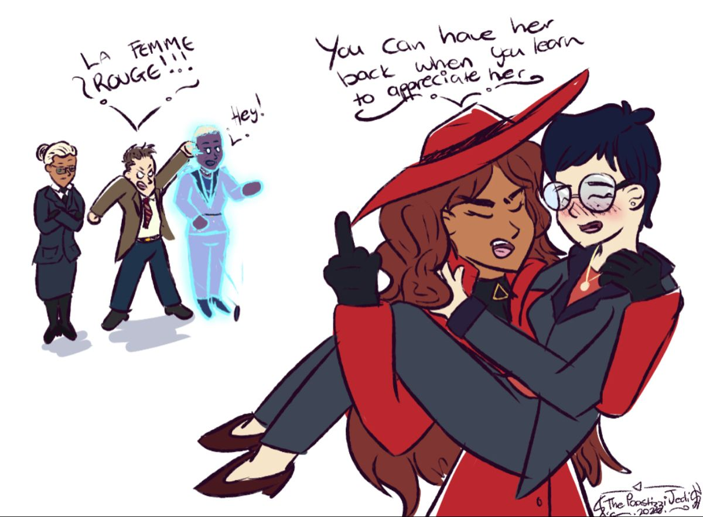
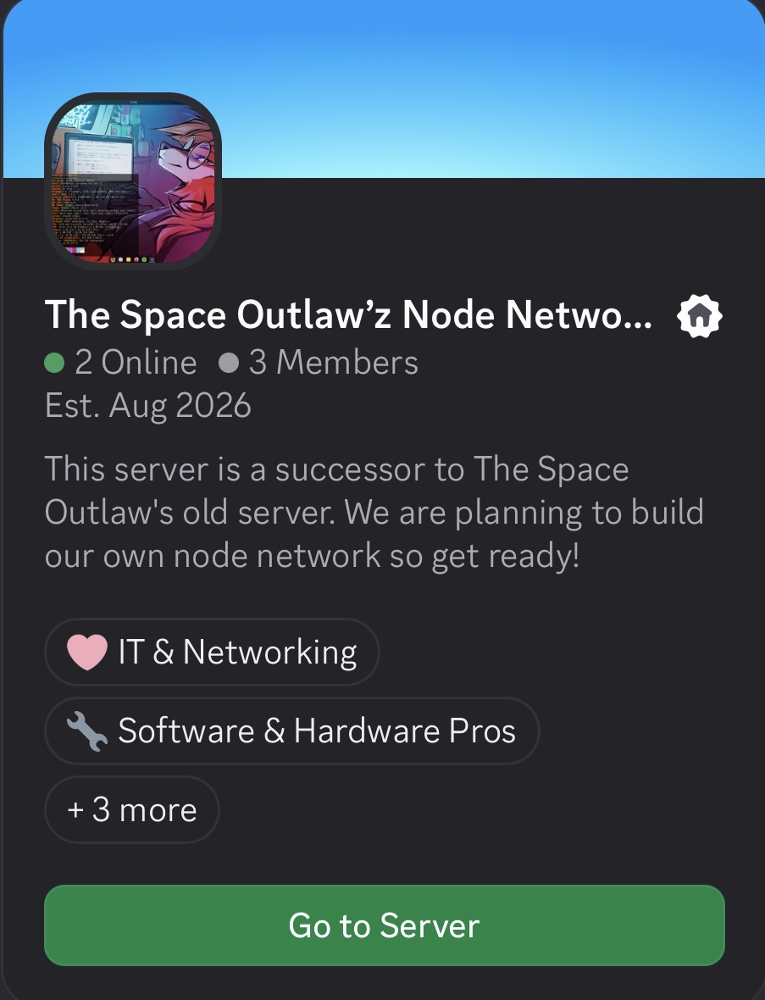

@entraptadoeztech
Welcome!
This is my blog! You can check out the cool things I blog about here!
This is my blog! You can check out the cool things I blog about here!
This community is filled with vibe coders, wanna-be-devs, and just some of the people in this community are very immature.
I really like this song, it really resonates with me.....
I really don't know if this little project of mine will work, but here is what I added:

low key why is this sooooo true.....
I decided to build my own community it is a project that The Space Outlaws is making it is called.....
